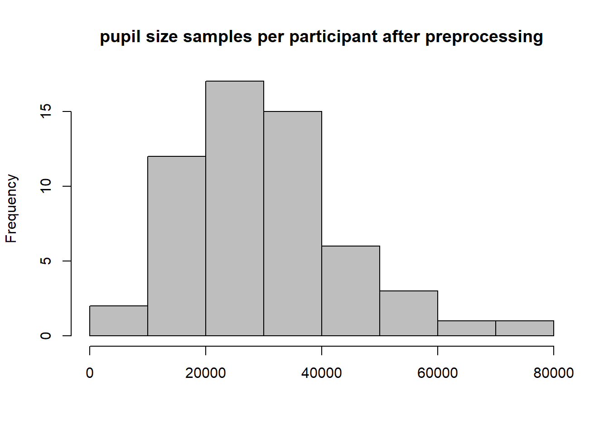
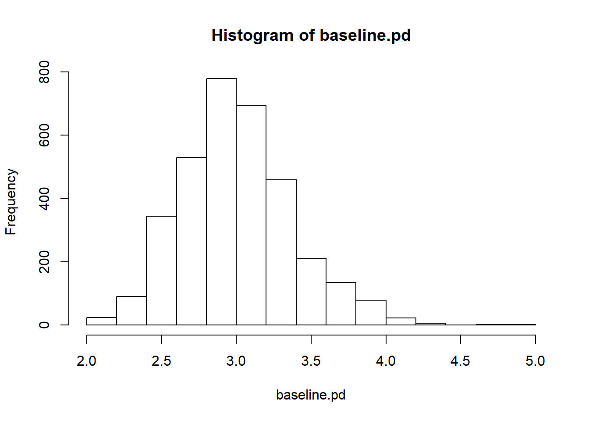
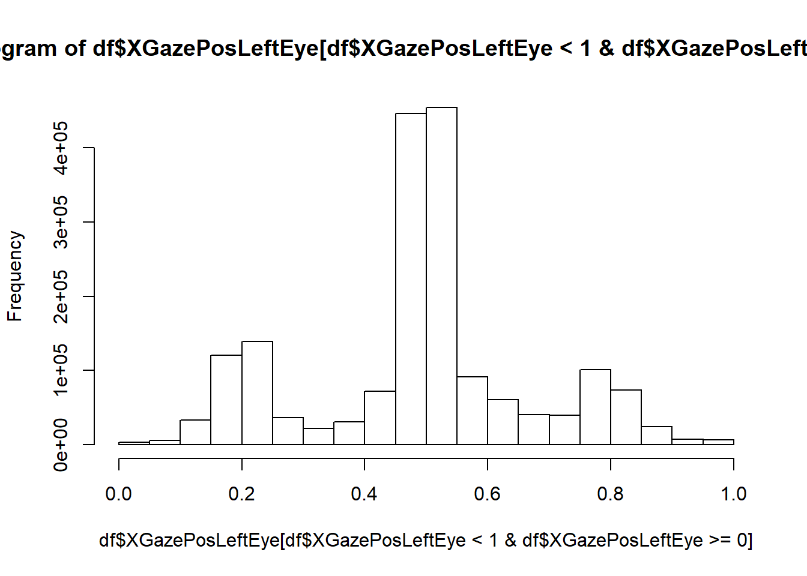
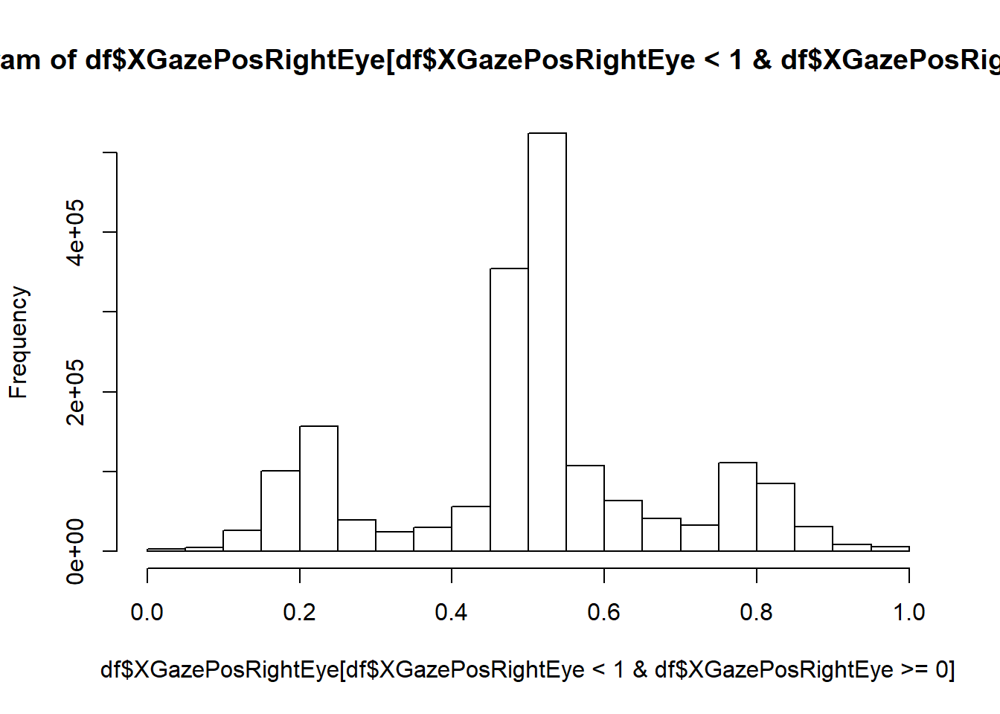
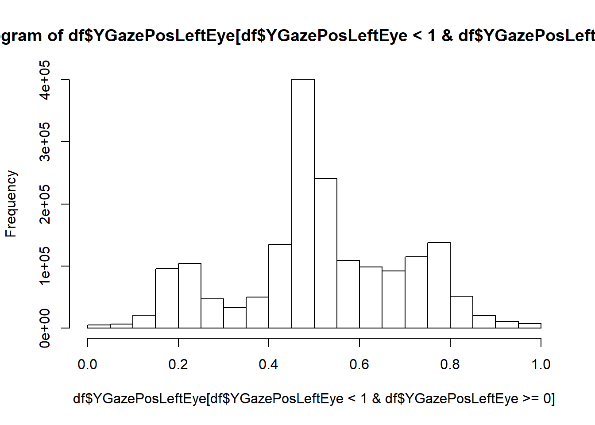
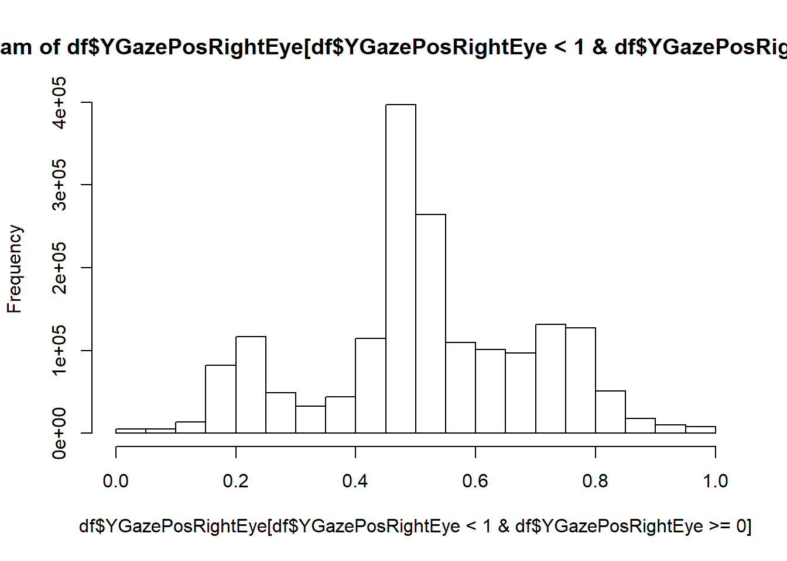
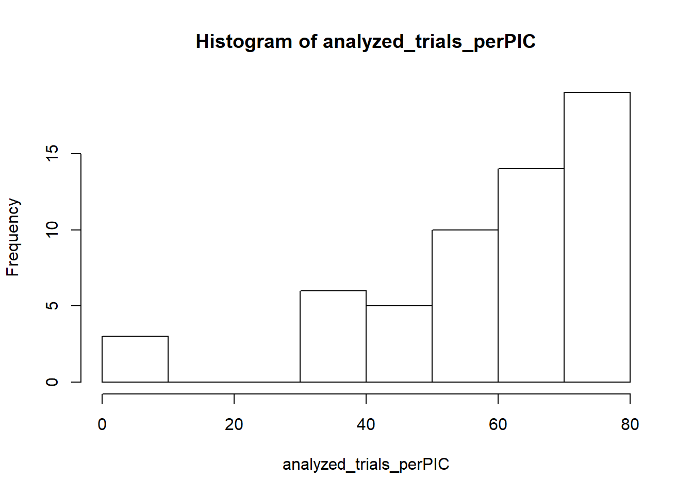
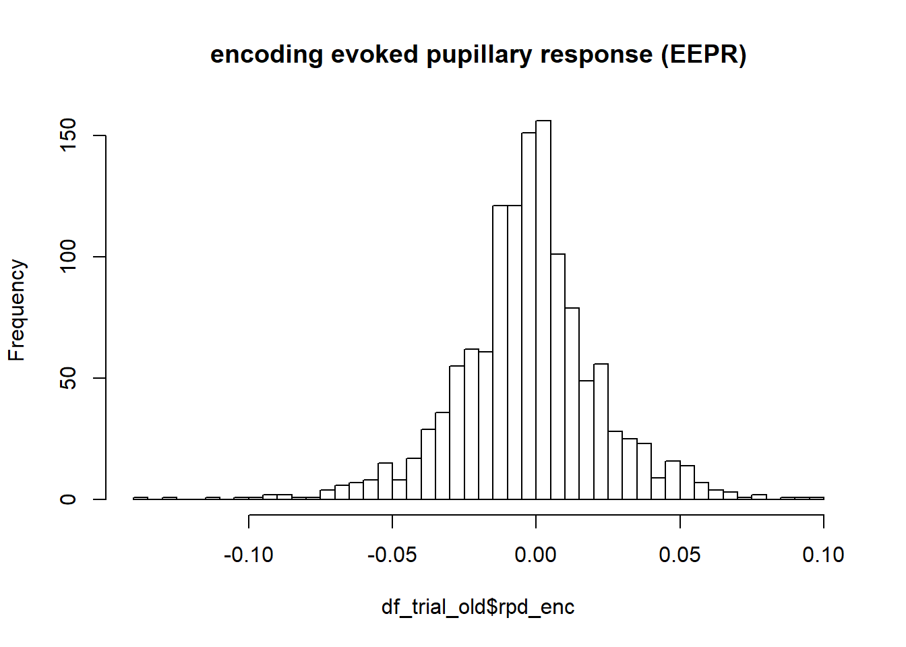
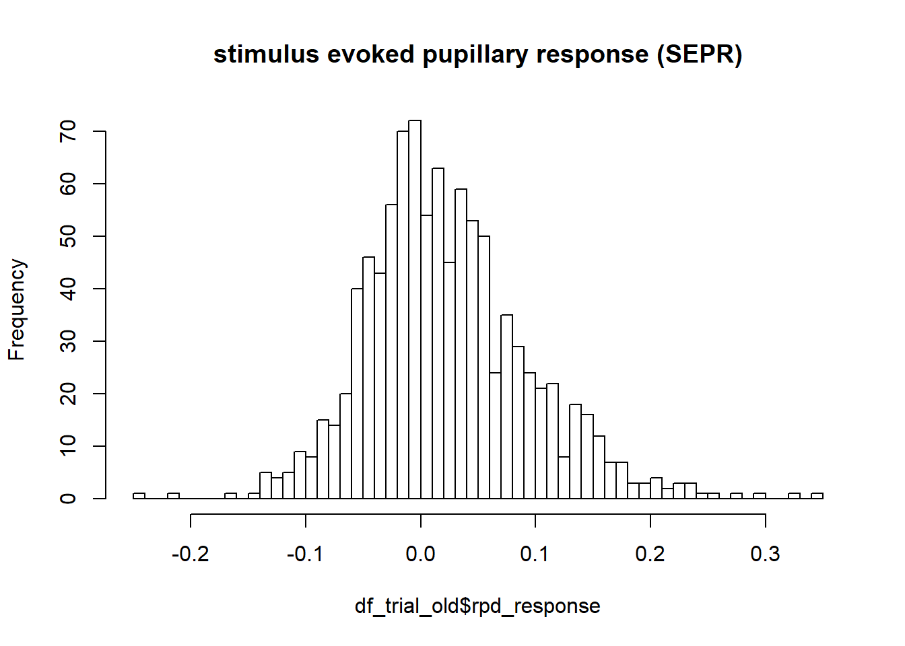

Preprocessing
Nico Bast
18 2 2021
Last updated: 2021-02-23
Checks: 7 0
Knit directory: Paper_RingMemoryPD/
This reproducible R Markdown analysis was created with workflowr (version 1.6.2). The Checks tab describes the reproducibility checks that were applied when the results were created. The Past versions tab lists the development history.
Great! Since the R Markdown file has been committed to the Git repository, you know the exact version of the code that produced these results.
Great job! The global environment was empty. Objects defined in the global environment can affect the analysis in your R Markdown file in unknown ways. For reproduciblity it’s best to always run the code in an empty environment.
The command set.seed(20210216) was run prior to running the code in the R Markdown file. Setting a seed ensures that any results that rely on randomness, e.g. subsampling or permutations, are reproducible.
Great job! Recording the operating system, R version, and package versions is critical for reproducibility.
Nice! There were no cached chunks for this analysis, so you can be confident that you successfully produced the results during this run.
Great job! Using relative paths to the files within your workflowr project makes it easier to run your code on other machines.
Great! You are using Git for version control. Tracking code development and connecting the code version to the results is critical for reproducibility.
The results in this page were generated with repository version 0304fef. See the Past versions tab to see a history of the changes made to the R Markdown and HTML files.
Note that you need to be careful to ensure that all relevant files for the analysis have been committed to Git prior to generating the results (you can use wflow_publish or wflow_git_commit). workflowr only checks the R Markdown file, but you know if there are other scripts or data files that it depends on. Below is the status of the Git repository when the results were generated:
Ignored files:
Ignored: .Rhistory
Ignored: .Rproj.user/
Ignored: analysis/analysis_PDmemory_cache/
Untracked files:
Untracked: .PowerFolder/
Untracked: code/analysis_RingPD.R
Untracked: code/analysis_RingPD_020720.R
Untracked: code/analysis_RingPD_021220.R
Untracked: code/analysis_encoding_RingPD.R
Untracked: data/coding file eye RK.xlsx
Untracked: data/encoding_df_200120.Rdata
Untracked: data/main_df_120819.Rdata
Untracked: data/main_df_preprocessed_220221.Rdata
Untracked: data/raw_df_encoding_170120.Rdata
Untracked: desktop.ini
Untracked: manuscript/
Untracked: output/figure1_concept_NE_effects.png
Untracked: output/figure3_histogram_heatmap.tiff
Untracked: output/figure4_encodingeffect_group.tiff
Untracked: output/figure5_memoryeffect_group.tiff
Untracked: output/figure6_PDeffects_on_Acc.tiff
Untracked: output/old/
Untracked: output/supplements_table3.pdf
Untracked: output/supplements_table4.pdf
Untracked: output/table1_sampledescription.pdf
Untracked: output/table2_model_logistic_regression.pdf
Untracked: project_init_workflow_RingMemoryPD.R
Untracked: ~$ructure_manuscript.docx
Note that any generated files, e.g. HTML, png, CSS, etc., are not included in this status report because it is ok for generated content to have uncommitted changes.
These are the previous versions of the repository in which changes were made to the R Markdown (analysis/preprocessing_PDmemory.Rmd) and HTML (docs/preprocessing_PDmemory.html) files. If you’ve configured a remote Git repository (see ?wflow_git_remote), click on the hyperlinks in the table below to view the files as they were in that past version.
| File | Version | Author | Date | Message |
|---|---|---|---|---|
| Rmd | 0304fef | nicobast | 2021-02-23 | Publish the initial files for myproject |
Load DATA
Define path to data on local machine
#READ PATH
data.files<-list.files(path=path_to_data, full.names=TRUE,recursive=T)
#LOAD data
data.file<-data.files[grep('data.txt',data.files)]
df.list<-lapply(data.file,read.table,fill=T,sep='\t',header=F,dec='.',na.strings='-1')
#--> takes some time Add data variables
added variables:
- variable names
- ID
- trial
- trial timestamp
#GET variable names
setwd(paste0(home_path,'/PowerFolders/Paper_RingMemoryPD')) #if called outside a knit
variables.names<-read_excel(paste0(getwd(),'/data/coding file eye RK.xlsx'),.name_repair = "minimal")
variables.names<-names(variables.names)[1:26]
#ADD variable names to the data
for(i in 1:length(df.list)){
names(df.list[[i]])<-variables.names
}
#ADD ID names to the data + remove unecessary bits
length_strings<-sapply(data.file,nchar)
id.names<-sapply(data.file,substr,start=length_strings-12,stop=length_strings-8)
id.names[grep('C',id.names)]<-substr(id.names[grep('C',id.names)],1,4) #remove unncessary characters
id.names[grep('d',id.names)]<-substr(id.names[grep('d',id.names)],1,nchar(id.names[grep('d',id.names)])-1) #remove unncessary characters
#-->later concatenate to data.frame
#ADD trials variable + remove NA data
func.trialvar<-function(x){
trials<-droplevels(interaction(x$TrialId,x$word))
x<-data.frame(x,trials)
x<-x[!is.na(trials),]
}
df.list<-lapply(df.list,func.trialvar)
#ADD timestamp variable
df.list<-lapply(df.list,function(x){
x<-x[order(x$trials),] #NOTE: from here df has no overall time orientation anymore - but important for easy ts.trial
ts.trial<-as.numeric(unlist(by(x$TrialId,x$trials,seq_along)))
x<-data.frame(x,ts.trial)
})
print('trials per participant:')[1] "trials per participant:"sapply(df.list,function(x){length(unique(x$trials))}) [1] 80 80 80 80 80 80 80 80 80 80 80 80 80 80 80 80 80 80 80 80 80 80 80 80 80
[26] 80 80 80 80 80 80 80 80 80 80 80 80 80 80 80 80 80 80 80 80 80 80 80 80 80
[51] 80 80 80 80 80 80 80Remove low quality trials
Less than 50% available eye tracking data
## - remove invalid trial data (less than 50% data per trial)
#percentage of pd data per trial
df.datapercent<-lapply(df.list,function(y){
trial.list<-split(y,y$trials)
datapercent<-sapply(trial.list,function(x){
dataleft<-sum(!is.na(x$DiameterPupilLeftEye))/nrow(x)
dataright<-sum(!is.na(x$DiameterPupilRightEye))/nrow(x)
return(c(dataleft,dataright))
})
datapercent<-data.frame(names(trial.list),t(datapercent))
names(datapercent)<-c('trial','lefteye','righteye')
return(datapercent)
})
names(df.datapercent)<-id.names
valid.data<-lapply(df.datapercent,function(x){(x$righteye>0.5)&(x$lefteye>0.5)})
#visualize valid data per eye - before preprocessing
# datapercent<-do.call(rbind,df.datapercent)
# hist(datapercent$lefteye)
# hist(datapercent$righteye)
#quality metric --> excluded trials
paste('total trials excluded:',
round(sum(unlist(valid.data)==FALSE)/sum(unlist(valid.data)),4)*100,
'%')[1] "total trials excluded: 27.34 %"valid.data_ASD<-valid.data[grep('AS',names(valid.data))]
valid.data_TD<-valid.data[grep('C',names(valid.data))]
paste('ASD trials excluded:',
round(sum(unlist(valid.data_ASD)==FALSE)/sum(unlist(valid.data_ASD)),4)*100,
'%')[1] "ASD trials excluded: 28.96 %"paste('TD trials excluded:',
round(sum(unlist(valid.data_TD)==FALSE)/sum(unlist(valid.data_TD)),4)*100,
'%')[1] "TD trials excluded: 25.92 %"#split data by trials (results in list of trials within list of participants)
df.list.trials<-lapply(df.list,function(x){x.list<-split(x,x$trials)})
#remove trials without valid data (<50% for each eye)
df.list.valid<-mapply(function(x,y){x<-x[y==T]},x=df.list.trials,y=valid.data)Preprocessing Pupil Size Data
on per-trial level based on Kret 2018
## - PD PREPROCESSING - per trial####
#pd.preprocess.func <-- applies Kret2018 reccomendations to data vector
#TO DO: improve preprocessing function: early values are omitted by rolling med
pd.preprocess.func<-function(x){
#PD preprocessing - according to Kret 2018 recommendations
#define variables
Left_Diameter<-x$DiameterPupilLeftEye
Right_Diameter<-x$DiameterPupilRightEye
Left_Validity<-x$ValidityLeftEye
Right_Validity<-x$ValidityRightEye
RemoteTime<-x$TETTime
#contstant for MAD caluclation
constant<-3
#constant<-3 #default value
# STEP 1 - exclude invalid data ####
pl <- ifelse((Left_Diameter<2|Left_Diameter>8), NA, Left_Diameter)
pl <- ifelse(Left_Validity<=2,pl,NA)
pr <- ifelse((Right_Diameter<2|Right_Diameter>8), NA, Right_Diameter)
pr <- ifelse(Right_Validity<=2,pr,NA)
#table(is.na(pl))
#table(is.na(pr))
# STEP 2 - filtering ####
## A) normalized dilation speed, take into account time jumps with Remotetimestamps: ####
#maximum change in pd compared to last and next pd measurement
#Left
pl.speed1<-diff(pl)/diff(RemoteTime) #compared to last
pl.speed2<-diff(rev(pl))/diff(rev(RemoteTime)) #compared to next
pl.speed1<-c(NA,pl.speed1)
pl.speed2<-c(rev(pl.speed2),NA)
pl.speed<-pmax(pl.speed1,pl.speed2,na.rm=T)
rm(pl.speed1,pl.speed2)
#Right
pr.speed1<-diff(pr)/diff(RemoteTime)
pr.speed2<-diff(rev(pr))/diff(rev(RemoteTime))
pr.speed1<-c(NA,pr.speed1)
pr.speed2<-c(rev(pr.speed2),NA)
pr.speed<-pmax(pr.speed1,pr.speed2,na.rm=T)
rm(pr.speed1,pr.speed2)
#median absolute deviation -SPEED
#constant<-3
pl.speed.med<-median(pl.speed,na.rm=T)
pl.mad<-median(abs(pl.speed-pl.speed.med),na.rm = T)
pl.treshold.speed<-pl.speed.med+constant*pl.mad #treshold.speed units are mm/microsecond
#plot(abs(pl.speed))+abline(h=pl.treshold.speed)
pr.speed.med<-median(pr.speed,na.rm=T)
pr.mad<-median(abs(pr.speed-pr.speed.med),na.rm = T)
pr.treshold.speed<-pr.speed.med+constant*pr.mad #treshold.speed units are mm/microsecond
#plot(abs(pr.speed))+abline(h=pr.treshold.speed)
#correct pupil dilation for speed outliers
pl<-ifelse(abs(pl.speed)>pl.treshold.speed,NA,pl)
pr<-ifelse(abs(pr.speed)>pr.treshold.speed,NA,pr)
## B) delete data around blinks - not applied ####
## C) normalized dilation size - median absolute deviation -SIZE ####
#applies a two pass approach
#first pass: exclude deviation from trend line derived from all samples
#second pass: exclude deviation from trend line derived from samples passing first pass
#-_> reintroduction of sample that might have been falsely excluded due to outliers
#estimate smooth size based on sampling rate
smooth.length<-150 #measured in ms
#take sampling rate into account (300 vs. 120):
#smooth.size<-round(smooth.length/mean(diff(RemoteTime)/1000)) #timestamp resolution in microseconds
smooth.size<-round(smooth.length/median(diff(RemoteTime),na.rm=T)) #timestamp resolution in milliseconds
is.even<-function(x){x%%2==0}
smooth.size<-ifelse(is.even(smooth.size)==T,smooth.size+1,smooth.size) #make sure to be odd value (see runmed)
#Left
pl.smooth<-na.approx(pl,na.rm=F,rule=2) #impute missing values with interpolation
#pl.smooth<-runmed(pl.smooth,k=smooth.size) #smooth algorithm by running median of 15 * 3.3ms
if(sum(!is.na(pl.smooth))!=0){pl.smooth<-runmed(pl.smooth,k=smooth.size)} #run smooth algo only if not all elements == NA
pl.mad<-median(abs(pl-pl.smooth),na.rm=T)
#Right
pr.smooth<-na.approx(pr,na.rm=F,rule=2) #impute missing values with interpolation
#pr.smooth<-runmed(pr.smooth,k=smooth.size) #smooth algorithm by running median of 15 * 3.3ms
if(sum(!is.na(pr.smooth))!=0){pr.smooth<-runmed(pr.smooth,k=smooth.size)} #run smooth algo only if not all elements == NA
pr.mad<-median(abs(pr-pr.smooth),na.rm=T)
#correct pupil dilation for size outliers - FIRST pass
pl.pass1<-ifelse((pl>pl.smooth+constant*pl.mad)|(pl<pl.smooth-constant*pl.mad),NA,pl)
pr.pass1<-ifelse((pr>pr.smooth+constant*pr.mad)|(pr<pr.smooth-constant*pr.mad),NA,pr)
#Left
pl.smooth<-na.approx(pl.pass1,na.rm=F,rule=2) #impute missing values with interpolation
#pl.smooth<-runmed(pl.smooth,k=smooth.size) #smooth algorithm by running median of 15 * 3.3ms
if(sum(!is.na(pl.smooth))!=0){pl.smooth<-runmed(pl.smooth,k=smooth.size)} #run smooth algo only if not all elements == NA
pl.mad<-median(abs(pl-pl.smooth),na.rm=T)
#Right
pr.smooth<-na.approx(pr.pass1,na.rm=F,rule=2) #impute missing values with interpolation
#pr.smooth<-runmed(pr.smooth,k=smooth.size) #smooth algorithm by running median of 15 * 3.3ms
if(sum(!is.na(pr.smooth))!=0){pr.smooth<-runmed(pr.smooth,k=smooth.size)} #run smooth algo only if not all elements == NA
pr.mad<-median(abs(pr-pr.smooth),na.rm=T)
#correct pupil dilation for size outliers - SECOND pass
pl.pass2<-ifelse((pl>pl.smooth+constant*pl.mad)|(pl<pl.smooth-constant*pl.mad),NA,pl)
pr.pass2<-ifelse((pr>pr.smooth+constant*pr.mad)|(pr<pr.smooth-constant*pr.mad),NA,pr)
pl<-pl.pass2
pr<-pr.pass2
## D) sparsity filter - not applied ####
# STEP 3 - processing valid samples ####
#take offset between left and right into account
pd.offset<-pl-pr
pd.offset<-na.approx(pd.offset,rule=2)
#mean pupil dilation across both eyes
pl <- ifelse(is.na(pl)==FALSE, pl, pr+pd.offset)
pr <- ifelse(is.na(pr)==FALSE, pr, pl-pd.offset)
pd <- (pl+pr)/2
# end of function --> return ####
#detach(x)
return(pd)
}
#pd is ordered by ascending trials, but allows combine with ordered df from above
pd.list<-lapply(df.list.valid,function(x){lapply(x,pd.preprocess.func)})
#map pd data to dataframe list - double mapply required as list of trials is nested in list of participants
df.list<-mapply(function(x,y){mapply(data.frame,x,y,SIMPLIFY = F)},x=df.list.valid,y=pd.list)
#change variable name to PD for all lists
df.list<-lapply(df.list,function(x){lapply(x,function(y){names(y)[29]<-'pd';return(y)})})
df<-lapply(df.list,rbind.fill) #collapse to dfs per participant
names(df)<-id.names
hist(sapply(df,function(x){sum(is.na(x$pd)==F)}),main='pupil size samples per participant after preprocessing',xlab='',col='grey')
manual repair
## - manually repair data structure of participant AS205 ####
df[['AS205']]<-df[['AS205']][,1:31]
df[['AS205']]<-df[['AS205']][,-c(27,28)]
names(df[['AS205']])[27:29]<-c('trials','ts.trial','pd')CREATE dataframe
#collapse to a data.frame (df) with ID intentifier (PIC)
PIC<-rep(id.names,sapply(df,nrow)) #create id.names times length of according data frame
df<-rbind.fill(df) #collapse to main df
df<-data.frame(PIC,df)
# SAVE RAW df in long format ####
#save(list=c('df','data.files','id.names'),file=paste0(path_to_project,'/data/raw_df_190221.Rdata'))Data Quality Control: visualize preprocessed PD data
#check of plausibility of the data
df$pd<-ifelse(df$pd>5,NA,df$pd) ##delete some remaining implauible values
hist(df$pd,50,main='absolute pupil size') #--> should be caught in preprocessing
#summary(df$pd)
g<-ggplot(df[df$ts.trial<240&df$ts.trial>30,],aes(x=ts.trial*8.3/1000,y=pd))
g+geom_smooth()+labs(x='trial duration (seconds)',y='pupil size (mm)')+
theme_bw()+
stat_summary(fun.data = mean_se, geom = "errorbar")+
labs(title='pupil dilation response aggregated across trials')`geom_smooth()` using method = 'gam' and formula 'y ~ s(x, bs = "cs")'Warning: Removed 203926 rows containing non-finite values (stat_smooth).Warning: Removed 203926 rows containing non-finite values (stat_summary).
#--> PD per trialCalculate realtive PD (main dependent variable)
- rpd = divisive correction
- rpd2 = subtractive correction
## - create relative PD data ####
#create BASELINE PD and relative PD variable
#baseline.pd<-c(with(df[df$ts.trial<=30,],by(df$pd,interaction(df$PIC,df$trials),median,na.rm=T)))
baseline.pd<-c(with(df[df$ts.trial<=30,],by(pd,interaction(PIC,trials),median,na.rm=T)))
#baseline.pd<-ifelse(baseline.pd>5,NA,baseline.pd) #correct for implausible high baseline values
summary(baseline.pd) Min. 1st Qu. Median Mean 3rd Qu. Max. NA's
2.033 2.754 2.982 3.007 3.221 4.975 1186 hist(baseline.pd)
baseline.identifier<-names(baseline.pd)
df.baseline<-data.frame(baseline.identifier,baseline.pd)
#--> alternative method without merge
# length.trial<-as.numeric(by(df$pd,interaction(df$PIC,df$trials),length))
# length.trial<-ifelse(is.na(length.trial)==T,0,length.trial)
# baseline.pd.long<-rep(baseline.pd,length.trial)
# rpd<-df$pd/baseline.pd.long
# rpd2<-df$pd-baseline.pd.long
# df<-data.frame(df,rpd,rpd2)
merger.x<-interaction(df$PIC,df$trials)
df<-merge(data.frame(df,merger.x),df.baseline,by.x='merger.x',by.y='baseline.identifier')
rpd<-df$pd/df$baseline.pd
rpd2<-df$pd-df$baseline.pd
df<-data.frame(df,rpd,rpd2)
#DIAGNOSE:
#g<-ggplot(df,aes(x=pd,y=baseline.pd))
#g+geom_smooth()Create “Old/New” Variable (main condition)
## - GET old-new variable and match to df ####
#CHECK: we have to assume that old new are presented according to TrialId, word counting, is this true?
# evidence: 'table(word.oldnew,df.oldnew$oldnew)' is balanced
data.file<-data.files[grep('oldnew',data.files)]
data.file<-data.file[grep('.txt',data.file)]
oldnew<-lapply(data.file,read.csv,header=F)
oldnew<-do.call(rbind,oldnew)
idnames.oldnew<-rep(id.names,each=80)
TrialId.oldnew<-rep(1:20,57*4)
#this bit corrects for pseudorandomized presentation of word categories
word.time<-c(by(df$ID,interaction(df$word,df$PIC),mean,na.rm=T)) #mean timestamp per category per participant
word.time<-matrix(word.time,nrow=57,ncol=4,byrow=T) #convert to matrix with participants as row, category (word) as column
word.time<-apply(word.time,1,rank) #get rank values --> when did categories appear in time
word.time<-c(word.time) #concatenate to vector
word.oldnew<-rep(word.time,each=20) #repeat to number of trials per category
#word.oldnew<-rep(c(rep(1,20),rep(2,20),rep(3,20),rep(4,20)),57)
#TO DO: --> this is wrong as the types/words/conditions were counterbalanced across participants
trials.oldnew<-interaction(TrialId.oldnew,word.oldnew)
df.oldnew<-data.frame(idnames.oldnew,trials.oldnew,oldnew)
names(df.oldnew)<-c('PIC.oldnew','trials.oldnew','oldnew')
matcher.x<-interaction(df$PIC,df$trials)
matcher.y<-interaction(df.oldnew$PIC.oldnew,df.oldnew$trials.oldnew)
df<-data.frame(df,matcher.x)
df.oldnew<-data.frame(df.oldnew,matcher.y)
df<-merge(df,df.oldnew,by.x='matcher.x',by.y='matcher.y')
#change to factor
df$oldnew<-ifelse(df$oldnew==1,'old','new')
df$oldnew<-as.factor(df$oldnew)Create group variable
## - define group condition ####
group<-ifelse(grepl('AS',df$PIC)==T,'ASD','TD')
df<-data.frame(df,group)Control for gaze behavior
- restrict gaze behavior to central 41%
- substantially alters results as ASD participants are more inclined to look away
## - GAZE behavior control - restrict gaze behavior to central 41% ####
##--> substantially changes the results --> ASD often look away
hist(df$XGazePosLeftEye[df$XGazePosLeftEye<1&df$XGazePosLeftEye>=0])
hist(df$XGazePosRightEye[df$XGazePosRightEye<1&df$XGazePosRightEye>=0])
hist(df$YGazePosLeftEye[df$YGazePosLeftEye<1&df$YGazePosLeftEye>=0])
hist(df$YGazePosRightEye[df$YGazePosRightEye<1&df$YGazePosRightEye>=0])
psych::describe(df$XGazePosLeftEye[df$XGazePosLeftEye<1&df$XGazePosLeftEye>=0]) #--> M=0.49, SD=0.18 vars n mean sd median trimmed mad min max range skew kurtosis se
X1 1 1809141 0.49 0.18 0.5 0.49 0.08 0 1 1 -0.04 -0.04 0psych::describe(df$XGazePosRightEye[df$XGazePosRightEye<1&df$XGazePosRightEye>=0]) #--> M=0.5, SD=0.18 vars n mean sd median trimmed mad min max range skew kurtosis se
X1 1 1805538 0.5 0.18 0.51 0.5 0.08 0 1 1 -0.05 -0.11 0psych::describe(df$YGazePosLeftEye[df$YGazePosLeftEye<1&df$YGazePosLeftEye>=0]) #--> M=0.51, SD=0.19 vars n mean sd median trimmed mad min max range skew kurtosis se
X1 1 1780930 0.51 0.19 0.5 0.52 0.15 0 1 1 -0.13 -0.34 0psych::describe(df$YGazePosRightEye[df$YGazePosRightEye<1&df$YGazePosRightEye>=0]) #--> M=0.52, SD=0.18 vars n mean sd median trimmed mad min max range skew kurtosis se
X1 1 1776269 0.52 0.18 0.5 0.52 0.15 0 1 1 -0.15 -0.3 0#analyzed display area compared to full display area
(0.72*0.75)/1[1] 0.54###--> values derived from above
valid.gaze<-with(df,ifelse(XGazePosLeftEye>0.13&
XGazePosLeftEye<0.85&
XGazePosRightEye>0.14&
XGazePosRightEye<0.86&
YGazePosLeftEye>0.13&
YGazePosLeftEye<0.88&
YGazePosRightEye>0.13&
YGazePosRightEye<0.88,T,F))
# valid.gaze<-with(df,ifelse(XGazePosLeftEye>0.4&
# XGazePosLeftEye<0.6&
# XGazePosRightEye>0.4&
# XGazePosRightEye<0.6&
# YGazePosLeftEye>0.4&
# YGazePosLeftEye<0.6&
# YGazePosRightEye>0.4&
# YGazePosRightEye<0.6,T,F))
sum(is.na(df$pd))/length(df$pd) #44.1% before gaze control[1] 0.3695424df$pd<-with(df,ifelse(valid.gaze==T,pd,NA))
df$rpd<-with(df,ifelse(valid.gaze==T,rpd,NA))
df$rpd2<-with(df,ifelse(valid.gaze==T,rpd2,NA))
sum(is.na(df$pd))/length(df$pd) #51.07% after gaze control[1] 0.4508334paste('excluded PD after preprocessing relative to possible PD data',
round(sum(is.na(df$rpd))/length(df$rpd),4)*100, #51.08% after gaze control
'%')[1] "excluded PD after preprocessing relative to possible PD data 46.74 %"Exclude participants with low number of trials
## - trials per ID ####
df.removed_NA<-df[!is.na(df$rpd2),]
analyzed_trials_perPIC<-with(df.removed_NA,by(trials,PIC,function(x){length(unique(x))}))
hist(analyzed_trials_perPIC)
#hist(as.numeric(analyzed_trials_perPIC)[group=='A'])
#hist(as.numeric(analyzed_trials_perPIC)[group=='C'])
group<-substr(unlist(labels(analyzed_trials_perPIC)),1,1)
print('IDs with low number of trials:')[1] "IDs with low number of trials:"analyzed_trials_perPIC[which(analyzed_trials_perPIC<32)]PIC
AS205 AS207 AS33
1 10 6 ###--> exclude three participants that deliver only very low number of trials AS205 (k=1), AS33 (k=6), AS207
df<-df[!df$PIC %in% c('AS205','AS207','AS33'),]Compare: number of trials per group
analyzed_trials_perPIC<-analyzed_trials_perPIC[!names(analyzed_trials_perPIC) %in% c('AS205','AS207','AS33')]
group<-substr(unlist(labels(analyzed_trials_perPIC)),1,1)
print('number of trials do not differ between groups:')[1] "number of trials do not differ between groups:" t.test(as.numeric(analyzed_trials_perPIC)~group)
Welch Two Sample t-test
data: as.numeric(analyzed_trials_perPIC) by group
t = 0.23496, df = 49.567, p-value = 0.8152
alternative hypothesis: true difference in means is not equal to 0
95 percent confidence interval:
-6.984211 8.834211
sample estimates:
mean in group A mean in group C
62.625 61.700 by(as.numeric(analyzed_trials_perPIC),group,psych::describe)group: A
vars n mean sd median trimmed mad min max range skew kurtosis se
X1 1 24 62.62 14.33 65.5 63.75 15.57 32 80 48 -0.6 -0.73 2.93
------------------------------------------------------------
group: C
vars n mean sd median trimmed mad min max range skew kurtosis se
X1 1 30 61.7 14.43 65.5 63 12.6 32 80 48 -0.63 -0.83 2.63SAVE df to file
## - FINAL df in long format (LOAD HERE) ####
#save(df,file='data/main_df_120819.Rdata')
#load(paste0(path_to_project,"/data/main_df_120819.Rdata"))create trial-aggregated file
- df.trial
## - AGGREGATE TO TRIAL (df_trial) ####
#create trial cat variable
trial.cat<-with(df,ifelse(ts.trial<30,1,
ifelse(ts.trial<60,2,
ifelse(ts.trial<90,3,
ifelse(ts.trial<120,4,
ifelse(ts.trial<150,5,
ifelse(ts.trial<180,6,
ifelse(ts.trial<210,7,
ifelse(ts.trial<=240,8,NA)))))))))
#phasic PD variable
rpd_end<-as.numeric(with(df[trial.cat==8,],by(rpd,interaction(PIC,trials),mean,na.rm=T)))
rpd_start<-as.numeric(with(df[trial.cat==1,],by(rpd,interaction(PIC,trials),mean,na.rm=T)))
rpd_response<-rpd_end-rpd_start
###--> something goes wrong during aggregating?
#aggregate additional variables
pd<-as.numeric(with(df,by(pd,interaction(PIC,trials),median,na.rm=T)))
rpd<-as.numeric(with(df,by(rpd,interaction(PIC,trials),median,na.rm=T)))
word<-as.numeric(with(df,by(word,interaction(PIC,trials),median,na.rm=T)))
group<-as.factor(with(df,by(group,interaction(PIC,trials),head,n=1)))
trials<-as.factor(with(df,by(trials,interaction(PIC,trials),head,n=1)))
PIC<-as.factor(with(df,by(PIC,interaction(PIC,trials),head,n=1)))
oldnew<-as.factor(with(df,by(oldnew,interaction(PIC,trials),head,n=1)))
shape<-as.numeric(with(df,by(shape,interaction(PIC,trials),head,n=1)))
levels(group)<-levels(df$group)
levels(PIC)<-levels(df$PIC)
levels(oldnew)<-levels(df$oldnew)
#levels(trials)<-levels(df$trials) #do not copy level names to be able to merge with perforamnce data
#create data frame
df_trial<-data.frame(PIC,trials,group,word,oldnew,shape,pd,rpd,rpd_response,rpd_end,rpd_start) LOAD performance data
## READ performance data ####
#read excel file with data in different worksheets
xlsx_file<-paste0(home_path,folder_to_data,'/data_performance_demo/accuracy,RT.xlsx')
sheets <- excel_sheets(xlsx_file)
list_perf <- lapply(sheets, function(X){read_excel(xlsx_file, sheet = X)})
list_perf <- lapply(list_perf, as.data.frame)
names(list_perf)<-sheets
#FORMAT list to df#
df_perf<-do.call(rbind,list_perf)
PIC<-substr(row.names(df_perf),1,5)
PIC[grep('C',PIC)]<-substr(PIC[grep('C',PIC)],1,nchar(PIC[grep('C',PIC)])-1) #remove unncessary characters
PIC[grep('\\.',PIC)]<-substr(PIC[grep('\\.',PIC)],1,nchar(PIC[grep('\\.',PIC)])-1) #as dot is a special character it needs to be escaped by \\
trials<-rep(1:80,times=57)
df_perf<-data.frame(PIC,trials,df_perf)
paste('overall accuracy:',
round(table(df_perf$Acc)[2]/sum(table(df_perf$Acc)),2),
"%")[1] "overall accuracy: 0.81 %"LOAD encoding data
###--> calculation of df_trial_enc see code "analysis_encoding_RingPD.R
load("data/encoding_df_200120.Rdata")
### TODO: integrate CODE script "analysis_encoding_RingPD.R" here:LOAD demographic data
## READ and DESCRIBE demographics data (participants table) ####
df_demo<-read_xlsx(paste0(home_path,folder_to_data,"/data_performance_demo/demographics.xlsx"))
#exclude participants that are removed from analysis
df_demo<-df_demo[!df_demo$participant %in% c('AS205','AS207','AS33'),]
#add baseline retreival pd data
bps_agg<-with(df,by(baseline.pd,PIC,mean,na.rm=T))
bps_agg<-bps_agg[!(names(bps_agg) %in% c('AS205','AS207','AS33'))]
df_bps_agg<-data.frame(names(bps_agg),as.numeric(bps_agg))
names(df_bps_agg)<-c('PIC','bps_agg')
df_demo<-merge(df_demo,df_bps_agg,by.x='participant',by.y='PIC')
#add baseline encoding pd data
bps_agg<-with(df_enc,by(baseline.pd,PIC,mean,na.rm=T))
bps_agg<-bps_agg[!(names(bps_agg) %in% c('AS205','AS207','AS33'))]
df_bps_agg<-data.frame(names(bps_agg),as.numeric(bps_agg))
names(df_bps_agg)<-c('PIC','bps_enc_agg')
df_demo<-merge(df_demo,df_bps_agg,by.x='participant',by.y='PIC')MERGE performance and demographics to trial aggregated data
## MERGE performance and demographics to df_trial (trial aggregated) ####
int_df_perf<-with(df_perf,interaction(PIC,trials))
int_df_trial<-with(df_trial,interaction(PIC,trials))
df_trial<-data.frame(df_trial,int_df_trial)
df_perf<-data.frame(df_perf,int_df_perf)
#merge performance
df_trial<-merge(df_perf,df_trial,by.x='int_df_perf',by.y='int_df_trial',all.x=T)
df_trial<-df_trial[,-c(1,2,3)]
names(df_trial)[which(names(df_trial)=='PIC.y')]<-'PIC'
names(df_trial)[which(names(df_trial)=='trials.y')]<-'trials'
df_trial$Acc<-as.factor(df_trial$Acc)
#merge demographics
df_trial<-merge(df_trial,df_demo,by.x='PIC',by.y='participant',all.x = T)MERGE encoding data
## MERGE encoding data ####
###PIC by shape links "encoding" and "task" data - but shapes are only specific for their respective "word"
df_trial_enc$shape_identifier_enc<-with(df_trial_enc,interaction(PIC,shape,word))
df_trial_enc_merge<-df_trial_enc[,c('pd','rpd','rpd_end','rpd_start','rpd_sepr_1s','rpd_sepr_2s','stimulus','shape_identifier_enc')]
#only relevant for "old" stimuli
df_trial_old<-df_trial[!is.na(df_trial$PIC),]
df_trial_old$PIC<-droplevels(df_trial_old$PIC)
df_trial_old<-df_trial_old[df_trial_old$oldnew=='old',]
df_trial_old$shape_identifier_task<-with(df_trial_old,interaction(PIC,shape,word))
df_trial_old<-merge(df_trial_old,df_trial_enc_merge,
by.x='shape_identifier_task',by.y='shape_identifier_enc',
suffixes = c('_task','_enc'))
hist(df_trial_old$rpd_enc,50,main='encoding evoked pupillary response (EEPR)')
hist(df_trial_old$rpd_response,50,main='stimulus evoked pupillary response (SEPR)')
#ggplot(df_trial_old,aes(scale(rpd_enc),fill=group))+geom_histogram(position = "dodge")
#ggplot(df_trial_old,aes(scale(rpd_response),fill=group))+geom_histogram(position = "dodge")
with(df_trial_old,psych::describe(rpd_enc)) vars n mean sd median trimmed mad min max range skew kurtosis se
X1 1 1288 0 0.03 0 0 0.02 -0.14 0.1 0.24 -0.29 2.52 0 with(df_trial_old,psych::describe(rpd_response)) vars n mean sd median trimmed mad min max range skew kurtosis se
X1 1 982 0.02 0.07 0.01 0.02 0.06 -0.25 0.34 0.59 0.59 1.16 0ADD PD data to aggregated file
### ADD aggregated PD data to df_demo ####
#add accuracy data
acc_agg<-with(df_trial_old,by(as.numeric(Acc)-1,PIC,mean,na.rm=T))
acc_agg<-acc_agg[!(names(acc_agg) %in% c('AS205','AS207','AS33'))]
df_acc_agg<-data.frame(names(acc_agg),as.numeric(acc_agg))
names(df_acc_agg)<-c('PIC','acc_agg')
df_demo<-merge(df_demo,df_acc_agg,by.x='participant',by.y='PIC',all.x=T)
#add encoding PD data
rpd_enc_agg<-with(df_trial_old,by(rpd_enc,PIC,mean,na.rm=T))
rpd_enc_agg<-rpd_enc_agg[!(names(rpd_enc_agg) %in% c('AS205','AS207','AS33'))]
df_enc_agg<-data.frame(names(rpd_enc_agg),as.numeric(rpd_enc_agg))
names(df_enc_agg)<-c('PIC','rpd_enc_agg')
df_demo<-merge(df_demo,df_enc_agg,by.x='participant',by.y='PIC',all.x=T)
#add retrieval PD data
rpd_rec_agg<-with(df_trial_old,by(rpd_response,PIC,mean,na.rm=T))
rpd_rec_agg<-rpd_rec_agg[!(names(rpd_rec_agg) %in% c('AS205','AS207','AS33'))]
df_rec_agg<-data.frame(names(rpd_rec_agg),as.numeric(rpd_rec_agg))
names(df_rec_agg)<-c('PIC','rpd_rec_agg')
df_demo<-merge(df_demo,df_rec_agg,by.x='participant',by.y='PIC',all.x=T)SAVE TO FILE
save(df_demo,df_trial,df_trial_old,df,df_trial_enc,df_enc,
file=paste0(path_to_project,'/data/main_df_preprocessed_220221.Rdata'))
sessionInfo()R version 3.6.1 (2019-07-05)
Platform: x86_64-w64-mingw32/x64 (64-bit)
Running under: Windows 10 x64 (build 19041)
Matrix products: default
locale:
[1] LC_COLLATE=German_Germany.1252 LC_CTYPE=German_Germany.1252
[3] LC_MONETARY=German_Germany.1252 LC_NUMERIC=C
[5] LC_TIME=German_Germany.1252
attached base packages:
[1] grid stats graphics grDevices utils datasets methods
[8] base
other attached packages:
[1] kableExtra_1.3.1 gridExtra_2.3 emmeans_1.4.3.01 lmerTest_3.1-2
[5] lme4_1.1-23 Matrix_1.2-18 ggplot2_3.2.1 plyr_1.8.5
[9] zoo_1.8-6 readxl_1.3.1 workflowr_1.6.2
loaded via a namespace (and not attached):
[1] Rcpp_1.0.3 mvtnorm_1.0-11 lattice_0.20-38
[4] rprojroot_1.3-2 digest_0.6.23 psych_1.9.12.31
[7] R6_2.4.1 cellranger_1.1.0 backports_1.1.5
[10] evaluate_0.14 httr_1.4.1 pillar_1.4.3
[13] rlang_0.4.8 lazyeval_0.2.2 minqa_1.2.4
[16] rstudioapi_0.10 whisker_0.4 nloptr_1.2.1
[19] rmarkdown_2.0 labeling_0.3 splines_3.6.1
[22] webshot_0.5.2 statmod_1.4.34 stringr_1.4.0
[25] munsell_0.5.0 compiler_3.6.1 numDeriv_2016.8-1.1
[28] httpuv_1.5.2 xfun_0.11 pkgconfig_2.0.3
[31] mnormt_1.5-5 mgcv_1.8-31 htmltools_0.4.0
[34] tidyselect_1.1.0 tibble_3.0.4 viridisLite_0.3.0
[37] crayon_1.3.4 dplyr_1.0.2 withr_2.1.2
[40] later_1.0.0 MASS_7.3-51.5 nlme_3.1-143
[43] xtable_1.8-4 gtable_0.3.0 lifecycle_0.2.0
[46] git2r_0.26.1 magrittr_1.5 scales_1.1.0
[49] estimability_1.3 stringi_1.4.5 farver_2.0.1
[52] fs_1.3.1 promises_1.1.0 xml2_1.2.2
[55] ellipsis_0.3.0 generics_0.0.2 vctrs_0.3.4
[58] boot_1.3-24 tools_3.6.1 glue_1.4.2
[61] purrr_0.3.3 parallel_3.6.1 yaml_2.2.0
[64] colorspace_1.4-1 rvest_0.3.5 knitr_1.26